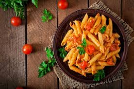

Home
Pasta

Description
We all love
Pasta,it is an Italian cuisine which is famous worldwide Today we will make
that.
Ingredients
- Macroni or Baby Pasta
- Tomato
- Onion
- Garlic
- 1 teaspoon coriander powder
- 1 teaspoon salt
- few drops of oil
- Any extra veggies you want
Steps
- Fine chop Onion,garlic and Tomatoes
- Chop any extra veggies you want
- Add salt,garam masala,coriander powder and make a mixture
- Boil water,add 1 teaspoon salt,1.5 cup pasta and 1 tsp oil
- Cook the pasta on a medium flame roughly 10 minutes
- Cook until it is soft and not chewy
- Fry all the vegetables and add the spices
- Add cooked pasta and mix well,if it is dry add more water
- Sprinkle Coriander leaves and Serve pasta hot